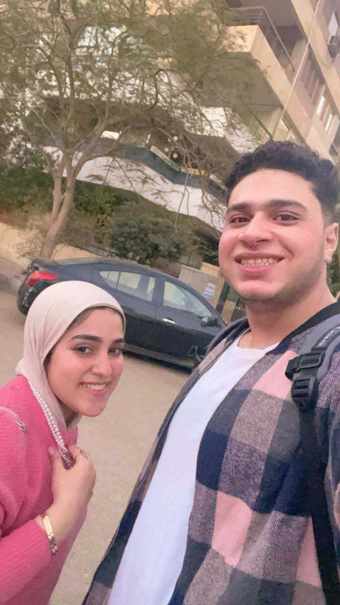
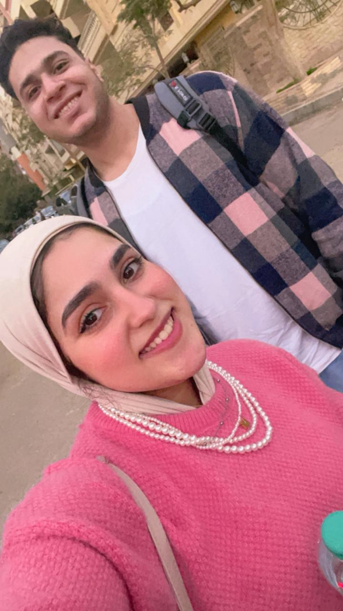

أول مرة أقابلك بره الشغل ❤️


🎵 أغنية الذكرى الأولى
ملك، ده كان أول يوم ننزل فيه سوا بعيد عن الشغل،
وأول مرة نقضي وقت مع بعض بالشكل ده.
يومها نزلنا مدينة نصر، وقعدنا نتمشى في شوارع
عباس العقاد ومكرم عبيد، وكانت من أكتر اللحظات
اللي كنت مستنيها من زمان.
فاكرة إني اتأخرت عليكي يومها؟ 😂
كنتِ واقفة مستنياني عند البنزينة اللي على أول عباس،
وأنا اتأخرت عليكي لأن اليوم ده كان تقريبًا أول مرة
أجيبلك فيها هدية بجد.
ودي كانت أول هدية أقدمها في حياتي،
وكون إن أول هدية أقدمها كانت ليكي إنتِ،
خلّى الموضوع بالنسبالي مميز جدًا.
وقتها جبتلك الشوكولاتة،
ولسه لحد دلوقتي محتفظة بالبوكس بتاعها،
ودي من الحاجات الصغيرة اللي كل ما أفتكرها
بحس قد إيه التفاصيل دي كانت غالية عندي.
أنا بجد مش قادر أوصفلك فرحتي بيكي يومها
كانت عاملة إزاي، ولا فرحتي إننا أخيرًا
اتقابلنا وقعدنا مع بعض بعيد عن الشغل.
كنت مبسوط جدًا لمجرد إنك قدامي،
وإننا أخيرًا عندنا وقت لينا إحنا.
بس أكتر حاجة فاكرها من اليوم ده إن الوقت
كان قليل جدًا...
وأنا من جوايا كنت نفسي اليوم يطول.
كنت نفسي أفضل معاكي ساعات أكتر بكتير،
نتمشى أكتر، ونتكلم أكتر،
وأعيش معاكي تفاصيل أكتر من اليوم ده.
يمكن الوقت اللي قضيناه سوا يومها كان قليل،
لكن تأثيره عندي كان كبير جدًا.
وأجمل حاجة إن الذكرى دي لسه عايشة
في تفاصيل صغيرة لحد دلوقتي...
زي بوكس الشوكولاتة اللي لسه محتفظة بيه. ❤️
ولو كنت أعرف وقتها إن اليوم ده هيبقى
من الذكريات اللي هفضل أفتكرها بالشكل ده،
كنت تمنيت إن الوقت يوقف شوية،
بس عشان أفضل معاكي أكتر.
وأتمنى إن دي ما تكونش مجرد أول مرة
نقعد فيها سوا بعيد عن الشغل...
أتمنى تكون مجرد بداية لأيام وذكريات
كتير جدًا لسه مستنيانا. ❤️